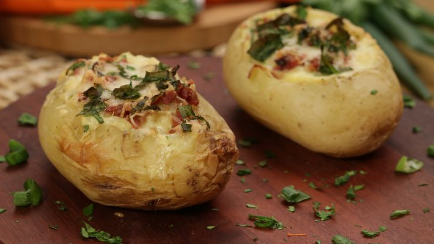

Receita Batata Recheada

IGREDIENTES
2 batatas médias cozidas
sal a gosto
pimenta-do-reino a gosto
1 ovo
180 g de queijo mussarela
bacon frito a gosto
1/2 lata de creme de leite
cebolinha a gosto
MODO DE PREPARO
Retire a polpa das duas batatas cozidas, deixando uma cavidade em cada uma, reserve.
Em um recipiente, misture as polpas da batata com sal, pimenta, ovo, queijo mussarela, bacon frito e creme de leite, misture bem.
Em um tabuleiro, coloque as duas batatas e distribua em cada cavidade um pouco de queijo mussarela, a mistura das polpas, bacon frito, mais um pouco de queijo mussarela por cima, bacon e finalize com cebolinha picada a gosto.
Leve ao forno (230° C), por cerca de 20 minutos.